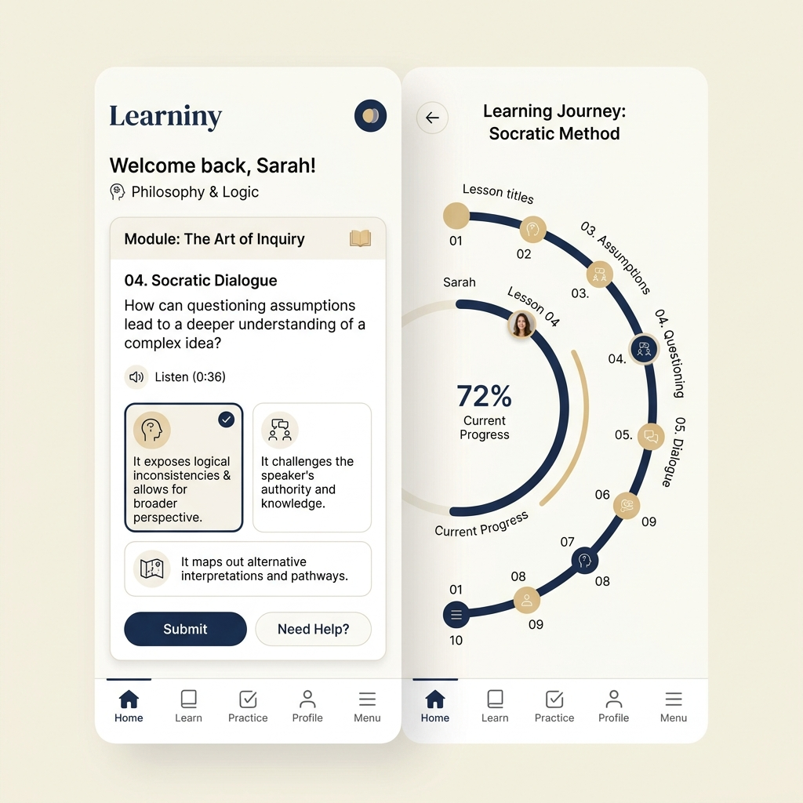

从痛点定义开始，人机分工明确，避免“模糊想法”直奔代码的传统盲区
.cursorrules / .windsurfrules 约束
严格卡死 WHY -> MECHANISM -> MODEL -> MVP 步骤，拒绝直接进行技术栈或库表的堆砌。在未通过 6 问最终检查前，AI 必须拒绝编写代码。
Skills 规范 $\rightarrow$ Claude Code $\rightarrow$ Antigravity
Skills 规则锁死架构导向；Claude Code 负责纯净 Next.js 前端框架极速搭建；Antigravity（Gemini 3.5）进行测试、Bug 定位与视觉质检，跑通上线闭环。

拒绝死记硬背单词，通过 Socrates 启发式问答（探索-观察-发现-应用），引导学生自己组合英语句式。
实时评估内在与外在认知负荷，动态控制每轮问题数为 2-6 题，确保学生无压力学习。
保证挑战位于当前能力 +0.1~0.3 的黄金区间；检测到挫败感边缘时，自动增加语法和词汇脚手架。
|
A数据壁垒 (DATA)
不只记录普通的聊天日志，而是精准提取高价值的用户表达习惯与因果错误图谱，为长期适应性优化沉淀资产。 |
B产品护城河 (MOAT)
建立核心在本地算法与认知教学架构，即使底层的 LLM 切换（GPT/Gemini/DeepSeek 切换），产品的灵魂依然存在。 |
|
C最小可行性 (MVP)
只做最核心的语法组装与实时调控闭环，把 80% 的外在需求全部削减，以最低成本最快跑通种子用户圈子。 |
D路线演进 (ROADMAP)
规划 1-3 个月验证 MVP 并快速迭代，3-6 个月优化体验、实现规模化效率，6 个月以上启动变现与商业闭环。 |
在 AI 协助编码日渐成熟的今天，初学者不再受制于如何手写配置。理清产品“为什么存在”、“要解决什么真实痛点”以及“底层的因果闭环机制”，才是独立开发出具有商业价值 MVP 的硬性门槛。
从“人主导写代码，AI 起辅助作用”转变为“人主导机制抽象与架构审阅，AI 起工业化生成与调试保证”。开发者转变为架构设计师，独立释放极强的单兵生产力。